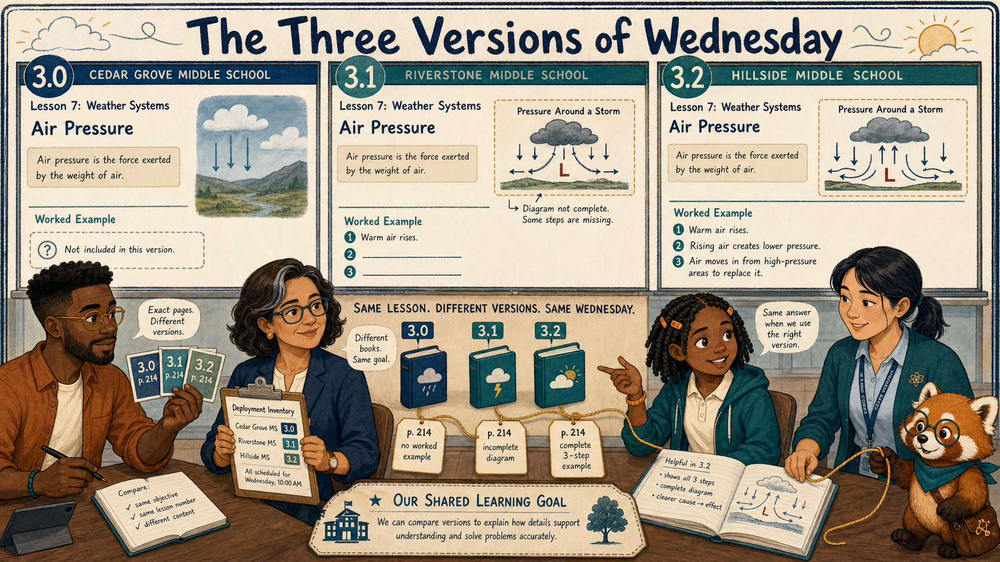
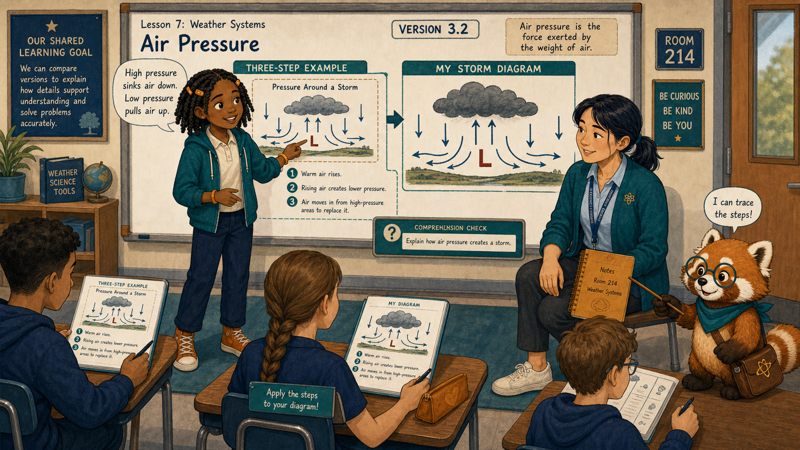
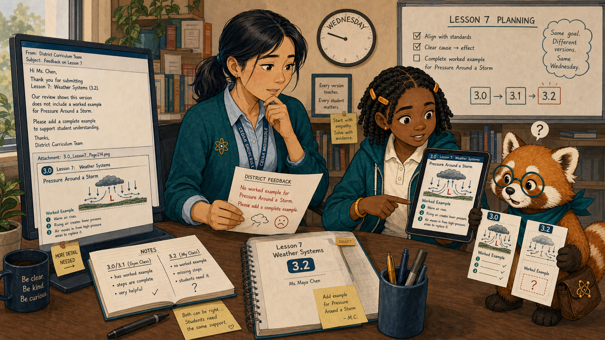
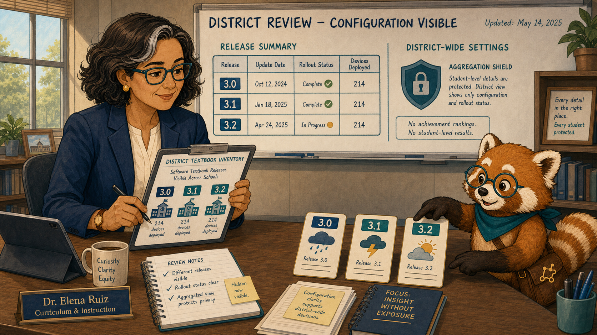
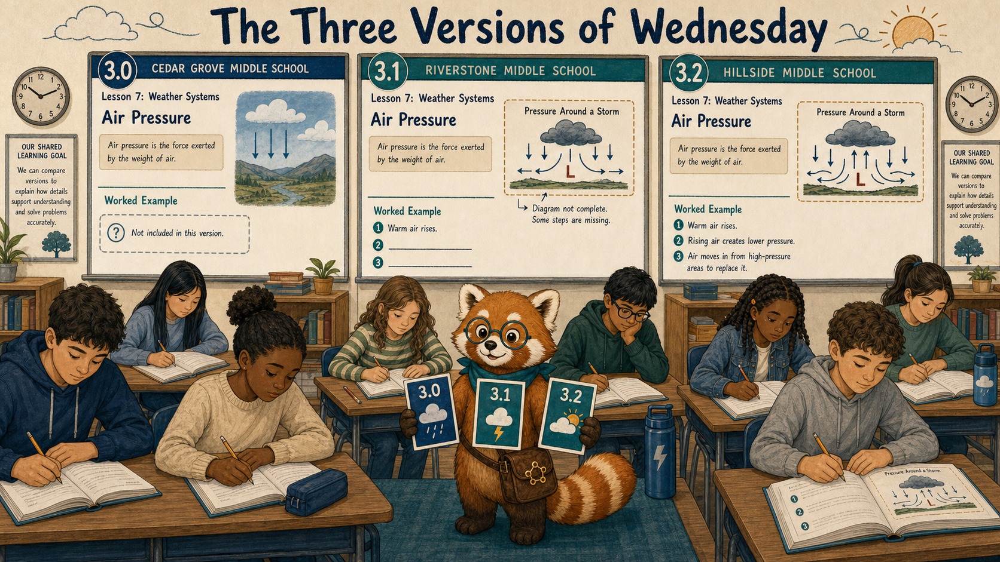
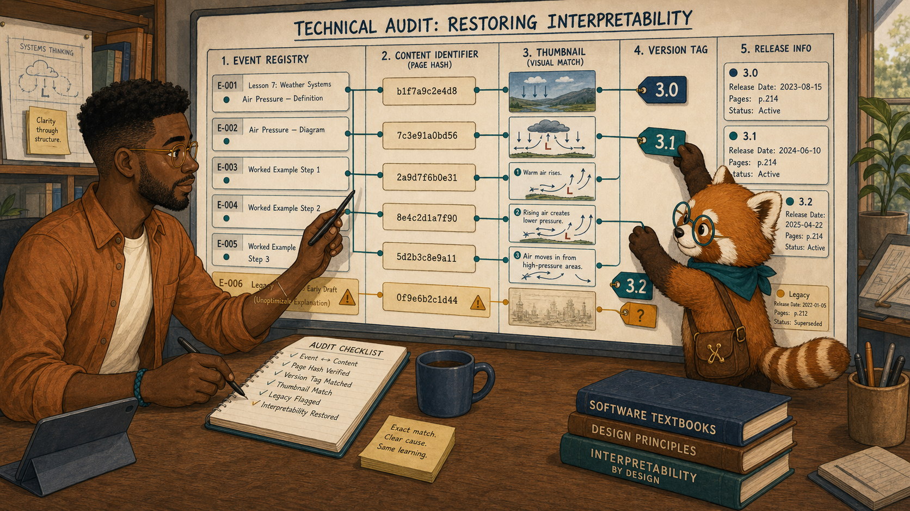
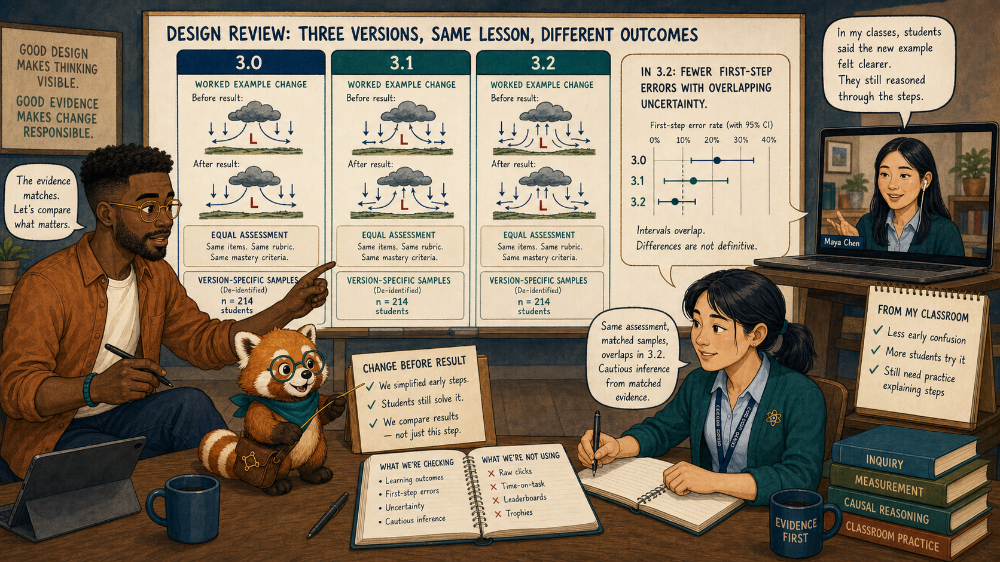
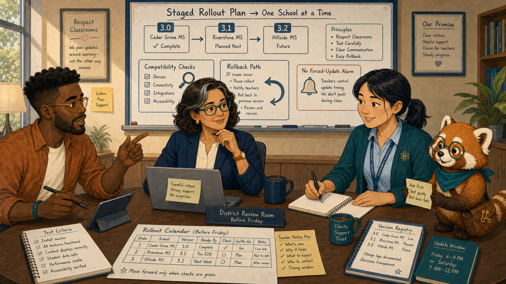
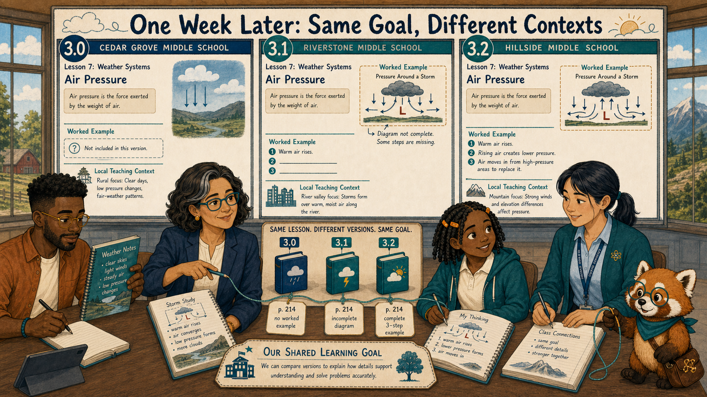
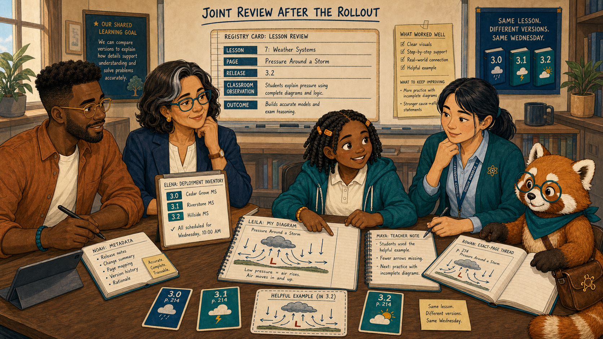

The Three Versions of Wednesday¶

Cover Image Prompt
(This is the Cover Image. Do not include this label in the image.) Generate a wide-landscape 16:9 illustration in a warm contemporary educational-comic style with clean ink contours, softly painted color, expressive natural faces, gentle paper texture, realistic proportions, and a navy, deep-teal, cinnamon, cream, and amber palette. Set the scene across three Cedar Grove middle-school classrooms on the same Wednesday. Show Leila Brooks, a 13-year-old Black American girl with a slender, age-appropriate build, rich dark-brown skin, a heart-shaped full-cheeked face, broad nose, large dark-brown eyes, and a small gap between her upper front teeth visible when she smiles; her black shoulder-length two-strand twists have a center part and are held back by two symmetrical matte amber barrettes, and she wears a cream short-sleeved polo under a teal zip-front school hoodie, dark-navy straight-leg trousers, cinnamon high-top sneakers, and an amber elastic wristband on her left wrist. Show Ms. Maya Chen, a 35-year-old Chinese American woman with a compact athletic build, light warm-beige skin, a softly square face with rounded cheeks, a small beauty mark below the outer corner of her left eye, and dark-brown almond-shaped eyes; her straight blue-black hair is center-parted in a low ponytail with two short face-framing strands, and she wears a deep-teal cardigan with pushed-up sleeves over a pale-blue button-front shirt, charcoal ankle trousers, white low-profile sneakers, an amber atom pin, and a dark-teal school lanyard. Show Noah Okafor, a 31-year-old Nigerian American man who is tall and lean, with deep umber-brown skin, a long oval face, broad nose, high forehead, dark-brown eyes behind round translucent amber glasses, a very short boxed beard and mustache, and dense black hair in a neat flat-topped coil cut with faded sides; he wears an open cinnamon overshirt over a cream crew-neck shirt, dark indigo trousers, teal canvas shoes, and a narrow deep-teal woven bracelet on his right wrist, and he usually holds a black stylus in his left hand. Show Dr. Elena Ruiz, a 47-year-old Mexican American woman of medium height and build, with warm medium-brown skin, an oval high-cheekboned face, dark-brown eyes behind thin rectangular deep-teal glasses, and a collarbone-length wavy espresso-brown bob with a side part and one narrow silver streak at her right temple; she wears a navy blazer over a cream collarless blouse, charcoal trousers, small hammered-gold circular studs, and a slim amber watch on her left wrist. Show Rowan, a small rounded anthropomorphic red panda about desk height, with cinnamon-orange fur, a cream muzzle, cream eyebrow patches and belly, large kind brown eyes, dark-brown legs, and a thick ringed cinnamon-and-cream tail; he wears round deep-teal glasses, a deep-teal triangular neckerchief, and a compact brown cross-body satchel bearing a small gold connected-dots emblem. Create three parallel classroom windows labeled only 3.0, 3.1, and 3.2, each showing a visibly different version of the same weather lesson. Leila and Maya stand in the helpful 3.2 window, Noah compares exact page cards, Elena holds a deployment inventory, and Rowan joins matching version tags with a gold thread. Include a worked example, a missing example, update arrows, school icons, and one shared learning goal. Render the exact title “The Three Versions of Wednesday” once in bold hand-lettered navy type. Emotional tone: apparent contradiction becoming precise version context. Keep every named character exactly consistent with this description, keep Rowan desk-height, and show no brands, logos, rankings, exposed private records, or decorative data. Generate the image immediately without asking clarifying questions.Narrative Prompt
This fictional nine-panel story follows three schools unknowingly using textbook versions 3.0, 3.1, and 3.2. Preserve the recurring cast. Version 3.2 contains a helpful worked air-pressure example; 3.1 has a partial example; 3.0 has none. Every event and comparison must retain version context, and the eventual rollout is staged and reversible.Prologue – Same Lesson, Different Page¶
Ms. Maya Chen teaches seventh-grade science at Cedar Grove Middle School. On Wednesday, her class praised a new worked example. Across the district, another teacher reported that the “same lesson” was confusing. Both reports were true.
Panel 1: The Example That Helped¶

Image Prompt
(This is Panel 01. Do not include the panel number in the image.) Generate a wide-landscape 16:9 illustration in a warm contemporary educational-comic style with clean ink contours, softly painted color, expressive natural faces, gentle paper texture, realistic proportions, and a navy, deep-teal, cinnamon, cream, and amber palette. Set the scene in Room 214 during Wednesday's weather lesson. Show Leila Brooks, a 13-year-old Black American girl with a slender, age-appropriate build, rich dark-brown skin, a heart-shaped full-cheeked face, broad nose, large dark-brown eyes, and a small gap between her upper front teeth visible when she smiles; her black shoulder-length two-strand twists have a center part and are held back by two symmetrical matte amber barrettes, and she wears a cream short-sleeved polo under a teal zip-front school hoodie, dark-navy straight-leg trousers, cinnamon high-top sneakers, and an amber elastic wristband on her left wrist. Show Ms. Maya Chen, a 35-year-old Chinese American woman with a compact athletic build, light warm-beige skin, a softly square face with rounded cheeks, a small beauty mark below the outer corner of her left eye, and dark-brown almond-shaped eyes; her straight blue-black hair is center-parted in a low ponytail with two short face-framing strands, and she wears a deep-teal cardigan with pushed-up sleeves over a pale-blue button-front shirt, charcoal ankle trousers, white low-profile sneakers, an amber atom pin, and a dark-teal school lanyard. Show Rowan, a small rounded anthropomorphic red panda about desk height, with cinnamon-orange fur, a cream muzzle, cream eyebrow patches and belly, large kind brown eyes, dark-brown legs, and a thick ringed cinnamon-and-cream tail; he wears round deep-teal glasses, a deep-teal triangular neckerchief, and a compact brown cross-body satchel bearing a small gold connected-dots emblem. Leila points from a clear three-step air-pressure example to her own storm diagram while Maya sits at student eye level. Include a visible version tag 3.2, high-to-low pressure arrows, her amber notebook, classmates applying the steps, a teal comprehension node, and Rowan tracing the worked sequence. Emotional tone: clarity and confident application. Keep every named character exactly consistent with this description, keep Rowan desk-height, and show no brands, logos, rankings, exposed private records, or decorative data. Generate the image immediately without asking clarifying questions.Leila Brooks is a 13-year-old student in Maya's science class. Rowan is the textbook's red-panda learning guide, helping people follow evidence without deciding for them. The three-step example gave Leila a path from pressure difference to wind direction. “This one shows the part I used to guess,” she said.
Panel 2: A Conflicting Report¶

Image Prompt
(This is Panel 02. Do not include the panel number in the image.) Generate a wide-landscape 16:9 illustration in a warm contemporary educational-comic style with clean ink contours, softly painted color, expressive natural faces, gentle paper texture, realistic proportions, and a navy, deep-teal, cinnamon, cream, and amber palette. Set the scene at Maya's desk after the same lesson. Show Ms. Maya Chen, a 35-year-old Chinese American woman with a compact athletic build, light warm-beige skin, a softly square face with rounded cheeks, a small beauty mark below the outer corner of her left eye, and dark-brown almond-shaped eyes; her straight blue-black hair is center-parted in a low ponytail with two short face-framing strands, and she wears a deep-teal cardigan with pushed-up sleeves over a pale-blue button-front shirt, charcoal ankle trousers, white low-profile sneakers, an amber atom pin, and a dark-teal school lanyard. Show Leila Brooks, a 13-year-old Black American girl with a slender, age-appropriate build, rich dark-brown skin, a heart-shaped full-cheeked face, broad nose, large dark-brown eyes, and a small gap between her upper front teeth visible when she smiles; her black shoulder-length two-strand twists have a center part and are held back by two symmetrical matte amber barrettes, and she wears a cream short-sleeved polo under a teal zip-front school hoodie, dark-navy straight-leg trousers, cinnamon high-top sneakers, and an amber elastic wristband on her left wrist. Show Rowan, a small rounded anthropomorphic red panda about desk height, with cinnamon-orange fur, a cream muzzle, cream eyebrow patches and belly, large kind brown eyes, dark-brown legs, and a thick ringed cinnamon-and-cream tail; he wears round deep-teal glasses, a deep-teal triangular neckerchief, and a compact brown cross-body satchel bearing a small gold connected-dots emblem. Maya reads a district teacher message saying the weather lesson lacks an example while Leila's tablet visibly shows one. Include the 3.2 version tag, a screenshot attachment marked 3.0, two contradictory notes, a clock on Wednesday, Maya's black marker, and Rowan comparing the corners of the two pages. Emotional tone: puzzlement without dismissing either classroom. Keep every named character exactly consistent with this description, keep Rowan desk-height, and show no brands, logos, rankings, exposed private records, or decorative data. Generate the image immediately without asking clarifying questions.The other teacher's screenshot showed no worked example at all. Maya resisted answering, “But it is right there.” She and Leila compared the page corners. The lesson title matched; the tiny version tags did not.
Panel 3: Inventory Before Interpretation¶

Image Prompt
(This is Panel 03. Do not include the panel number in the image.) Generate a wide-landscape 16:9 illustration in a warm contemporary educational-comic style with clean ink contours, softly painted color, expressive natural faces, gentle paper texture, realistic proportions, and a navy, deep-teal, cinnamon, cream, and amber palette. Set the scene in Elena's district review room that afternoon. Show Dr. Elena Ruiz, a 47-year-old Mexican American woman of medium height and build, with warm medium-brown skin, an oval high-cheekboned face, dark-brown eyes behind thin rectangular deep-teal glasses, and a collarbone-length wavy espresso-brown bob with a side part and one narrow silver streak at her right temple; she wears a navy blazer over a cream collarless blouse, charcoal trousers, small hammered-gold circular studs, and a slim amber watch on her left wrist. Show Rowan, a small rounded anthropomorphic red panda about desk height, with cinnamon-orange fur, a cream muzzle, cream eyebrow patches and belly, large kind brown eyes, dark-brown legs, and a thick ringed cinnamon-and-cream tail; he wears round deep-teal glasses, a deep-teal triangular neckerchief, and a compact brown cross-body satchel bearing a small gold connected-dots emblem. Elena studies a school inventory showing three releases—3.0, 3.1, and 3.2—distributed across otherwise similar school icons. Include update dates, device counts, rollout status, no achievement rankings, an aggregation shield, and Rowan laying three version cards side by side. Emotional tone: a hidden configuration becoming visible. Keep every named character exactly consistent with this description, keep Rowan desk-height, and show no brands, logos, rankings, exposed private records, or decorative data. Generate the image immediately without asking clarifying questions.Dr. Elena Ruiz is the district learning director and coordinates supported textbook deployments. Her inventory revealed that three schools were using three releases. Evidence labeled only by chapter title had mixed unlike experiences.
Panel 4: Three Wednesdays¶

Image Prompt
(This is Panel 04. Do not include the panel number in the image.) Generate a wide-landscape 16:9 illustration in a warm contemporary educational-comic style with clean ink contours, softly painted color, expressive natural faces, gentle paper texture, realistic proportions, and a navy, deep-teal, cinnamon, cream, and amber palette. Set the scene in a balanced triptych of three classrooms on Wednesday. Show Rowan, a small rounded anthropomorphic red panda about desk height, with cinnamon-orange fur, a cream muzzle, cream eyebrow patches and belly, large kind brown eyes, dark-brown legs, and a thick ringed cinnamon-and-cream tail; he wears round deep-teal glasses, a deep-teal triangular neckerchief, and a compact brown cross-body satchel bearing a small gold connected-dots emblem. Show three anonymous, equally resourced classrooms: version 3.0 has no worked example, 3.1 has one incomplete diagram, and 3.2 has the full three-step example. Rowan stands at the center with three matching page cards. Include identical learning goals, same lesson title, equal clocks, different version tags, anonymous students, and no winner colors. Emotional tone: precise contrast without judging schools. Keep every named character exactly consistent with this description, keep Rowan desk-height, and show no brands, logos, rankings, exposed private records, or decorative data. Generate the image immediately without asking clarifying questions.Version 3.0 moved directly from explanation to practice. Version 3.1 added a diagram but omitted the reasoning between steps. Version 3.2 included the complete worked example. Wednesday had contained three materially different lessons.
Panel 5: Match Every Record to Its Page¶

Image Prompt
(This is Panel 05. Do not include the panel number in the image.) Generate a wide-landscape 16:9 illustration in a warm contemporary educational-comic style with clean ink contours, softly painted color, expressive natural faces, gentle paper texture, realistic proportions, and a navy, deep-teal, cinnamon, cream, and amber palette. Set the scene in Noah's design studio during a technical audit. Show Noah Okafor, a 31-year-old Nigerian American man who is tall and lean, with deep umber-brown skin, a long oval face, broad nose, high forehead, dark-brown eyes behind round translucent amber glasses, a very short boxed beard and mustache, and dense black hair in a neat flat-topped coil cut with faded sides; he wears an open cinnamon overshirt over a cream crew-neck shirt, dark indigo trousers, teal canvas shoes, and a narrow deep-teal woven bracelet on his right wrist, and he usually holds a black stylus in his left hand. Show Rowan, a small rounded anthropomorphic red panda about desk height, with cinnamon-orange fur, a cream muzzle, cream eyebrow patches and belly, large kind brown eyes, dark-brown legs, and a thick ringed cinnamon-and-cream tail; he wears round deep-teal glasses, a deep-teal triangular neckerchief, and a compact brown cross-body satchel bearing a small gold connected-dots emblem. Noah uses his left-hand stylus to connect event cards to exact content identifiers and version tags 3.0, 3.1, and 3.2. Include page hashes, release dates, a registry, one unlabeled legacy event flagged amber, three matching thumbnails, and Rowan fastening version labels to the cards. Emotional tone: technical precision restoring interpretability. Keep every named character exactly consistent with this description, keep Rowan desk-height, and show no brands, logos, rankings, exposed private records, or decorative data. Generate the image immediately without asking clarifying questions.Noah Okafor designs the interactive textbook and its release metadata. He verified that recent records carried exact versions, then isolated older events that lacked them. Comparisons became meaningful only after each response was matched to the page the learner actually saw.
Panel 6: What Changed, What Helped¶

Image Prompt
(This is Panel 06. Do not include the panel number in the image.) Generate a wide-landscape 16:9 illustration in a warm contemporary educational-comic style with clean ink contours, softly painted color, expressive natural faces, gentle paper texture, realistic proportions, and a navy, deep-teal, cinnamon, cream, and amber palette. Set the scene in a design review with Maya joining remotely. Show Noah Okafor, a 31-year-old Nigerian American man who is tall and lean, with deep umber-brown skin, a long oval face, broad nose, high forehead, dark-brown eyes behind round translucent amber glasses, a very short boxed beard and mustache, and dense black hair in a neat flat-topped coil cut with faded sides; he wears an open cinnamon overshirt over a cream crew-neck shirt, dark indigo trousers, teal canvas shoes, and a narrow deep-teal woven bracelet on his right wrist, and he usually holds a black stylus in his left hand. Show Ms. Maya Chen, a 35-year-old Chinese American woman with a compact athletic build, light warm-beige skin, a softly square face with rounded cheeks, a small beauty mark below the outer corner of her left eye, and dark-brown almond-shaped eyes; her straight blue-black hair is center-parted in a low ponytail with two short face-framing strands, and she wears a deep-teal cardigan with pushed-up sleeves over a pale-blue button-front shirt, charcoal ankle trousers, white low-profile sneakers, an amber atom pin, and a dark-teal school lanyard. Show Rowan, a small rounded anthropomorphic red panda about desk height, with cinnamon-orange fur, a cream muzzle, cream eyebrow patches and belly, large kind brown eyes, dark-brown legs, and a thick ringed cinnamon-and-cream tail; he wears round deep-teal glasses, a deep-teal triangular neckerchief, and a compact brown cross-body satchel bearing a small gold connected-dots emblem. Noah and Maya compare three de-identified outcome panels aligned to the version differences; version 3.2 shows fewer first-step errors with overlapping uncertainty. Include the exact worked-example change, equal assessment, version-specific sample sizes, no raw click trophy, Maya's classroom note, and Rowan pointing to the change before the result. Emotional tone: cautious inference from matched evidence. Keep every named character exactly consistent with this description, keep Rowan desk-height, and show no brands, logos, rankings, exposed private records, or decorative data. Generate the image immediately without asking clarifying questions.The version-specific comparison suggested that the full example reduced first-step errors. Maya's classroom observation supported the interpretation. Noah did not attribute every difference to the page; he documented uncertainty and proposed a staged update.
Panel 7: Plan a Reversible Rollout¶

Image Prompt
(This is Panel 07. Do not include the panel number in the image.) Generate a wide-landscape 16:9 illustration in a warm contemporary educational-comic style with clean ink contours, softly painted color, expressive natural faces, gentle paper texture, realistic proportions, and a navy, deep-teal, cinnamon, cream, and amber palette. Set the scene in Elena's district review room before Friday. Show Dr. Elena Ruiz, a 47-year-old Mexican American woman of medium height and build, with warm medium-brown skin, an oval high-cheekboned face, dark-brown eyes behind thin rectangular deep-teal glasses, and a collarbone-length wavy espresso-brown bob with a side part and one narrow silver streak at her right temple; she wears a navy blazer over a cream collarless blouse, charcoal trousers, small hammered-gold circular studs, and a slim amber watch on her left wrist. Show Noah Okafor, a 31-year-old Nigerian American man who is tall and lean, with deep umber-brown skin, a long oval face, broad nose, high forehead, dark-brown eyes behind round translucent amber glasses, a very short boxed beard and mustache, and dense black hair in a neat flat-topped coil cut with faded sides; he wears an open cinnamon overshirt over a cream crew-neck shirt, dark indigo trousers, teal canvas shoes, and a narrow deep-teal woven bracelet on his right wrist, and he usually holds a black stylus in his left hand. Show Ms. Maya Chen, a 35-year-old Chinese American woman with a compact athletic build, light warm-beige skin, a softly square face with rounded cheeks, a small beauty mark below the outer corner of her left eye, and dark-brown almond-shaped eyes; her straight blue-black hair is center-parted in a low ponytail with two short face-framing strands, and she wears a deep-teal cardigan with pushed-up sleeves over a pale-blue button-front shirt, charcoal ankle trousers, white low-profile sneakers, an amber atom pin, and a dark-teal school lanyard. Show Rowan, a small rounded anthropomorphic red panda about desk height, with cinnamon-orange fur, a cream muzzle, cream eyebrow patches and belly, large kind brown eyes, dark-brown legs, and a thick ringed cinnamon-and-cream tail; he wears round deep-teal glasses, a deep-teal triangular neckerchief, and a compact brown cross-body satchel bearing a small gold connected-dots emblem. Elena reviews a staged rollout calendar moving one school at a time to 3.2 with compatibility checks and rollback paths; Noah and Maya contribute test criteria. Include device readiness, teacher notice, version registry, update window, rollback arrow, and no forced-update alarm. Emotional tone: controlled coordination and respect for classrooms. Keep every named character exactly consistent with this description, keep Rowan desk-height, and show no brands, logos, rankings, exposed private records, or decorative data. Generate the image immediately without asking clarifying questions.Elena scheduled a supported rollout rather than a surprise switch. Each school received readiness checks, teacher notice, a test window, and a rollback plan. Version control became part of instructional care.
Panel 8: Now Compare Like with Like¶

Image Prompt
(This is Panel 08. Do not include the panel number in the image.) Generate a wide-landscape 16:9 illustration in a warm contemporary educational-comic style with clean ink contours, softly painted color, expressive natural faces, gentle paper texture, realistic proportions, and a navy, deep-teal, cinnamon, cream, and amber palette. Set the scene across the three classrooms one week later. Show Leila Brooks, a 13-year-old Black American girl with a slender, age-appropriate build, rich dark-brown skin, a heart-shaped full-cheeked face, broad nose, large dark-brown eyes, and a small gap between her upper front teeth visible when she smiles; her black shoulder-length two-strand twists have a center part and are held back by two symmetrical matte amber barrettes, and she wears a cream short-sleeved polo under a teal zip-front school hoodie, dark-navy straight-leg trousers, cinnamon high-top sneakers, and an amber elastic wristband on her left wrist. Show Ms. Maya Chen, a 35-year-old Chinese American woman with a compact athletic build, light warm-beige skin, a softly square face with rounded cheeks, a small beauty mark below the outer corner of her left eye, and dark-brown almond-shaped eyes; her straight blue-black hair is center-parted in a low ponytail with two short face-framing strands, and she wears a deep-teal cardigan with pushed-up sleeves over a pale-blue button-front shirt, charcoal ankle trousers, white low-profile sneakers, an amber atom pin, and a dark-teal school lanyard. Show Rowan, a small rounded anthropomorphic red panda about desk height, with cinnamon-orange fur, a cream muzzle, cream eyebrow patches and belly, large kind brown eyes, dark-brown legs, and a thick ringed cinnamon-and-cream tail; he wears round deep-teal glasses, a deep-teal triangular neckerchief, and a compact brown cross-body satchel bearing a small gold connected-dots emblem. Show all three classroom windows using version 3.2 with the same worked example and distinct local teaching contexts; Leila and Maya appear in Room 214. Include identical version tags, different student notebooks, aligned event metadata, stable lesson goals, school icons, and Rowan joining the windows with a teal thread. Emotional tone: alignment without erasing classroom differences. Keep every named character exactly consistent with this description, keep Rowan desk-height, and show no brands, logos, rankings, exposed private records, or decorative data. Generate the image immediately without asking clarifying questions.After the staged update, all three schools used 3.2. Teachers still taught in their own ways, but the content being compared now matched. The contradiction did not vanish; it had been explained and bounded.
Panel 9: The Exact Page Matters¶

Image Prompt
(This is Panel 09. Do not include the panel number in the image.) Generate a wide-landscape 16:9 illustration in a warm contemporary educational-comic style with clean ink contours, softly painted color, expressive natural faces, gentle paper texture, realistic proportions, and a navy, deep-teal, cinnamon, cream, and amber palette. Set the scene in a joint review after the rollout. Show Leila Brooks, a 13-year-old Black American girl with a slender, age-appropriate build, rich dark-brown skin, a heart-shaped full-cheeked face, broad nose, large dark-brown eyes, and a small gap between her upper front teeth visible when she smiles; her black shoulder-length two-strand twists have a center part and are held back by two symmetrical matte amber barrettes, and she wears a cream short-sleeved polo under a teal zip-front school hoodie, dark-navy straight-leg trousers, cinnamon high-top sneakers, and an amber elastic wristband on her left wrist. Show Ms. Maya Chen, a 35-year-old Chinese American woman with a compact athletic build, light warm-beige skin, a softly square face with rounded cheeks, a small beauty mark below the outer corner of her left eye, and dark-brown almond-shaped eyes; her straight blue-black hair is center-parted in a low ponytail with two short face-framing strands, and she wears a deep-teal cardigan with pushed-up sleeves over a pale-blue button-front shirt, charcoal ankle trousers, white low-profile sneakers, an amber atom pin, and a dark-teal school lanyard. Show Noah Okafor, a 31-year-old Nigerian American man who is tall and lean, with deep umber-brown skin, a long oval face, broad nose, high forehead, dark-brown eyes behind round translucent amber glasses, a very short boxed beard and mustache, and dense black hair in a neat flat-topped coil cut with faded sides; he wears an open cinnamon overshirt over a cream crew-neck shirt, dark indigo trousers, teal canvas shoes, and a narrow deep-teal woven bracelet on his right wrist, and he usually holds a black stylus in his left hand. Show Dr. Elena Ruiz, a 47-year-old Mexican American woman of medium height and build, with warm medium-brown skin, an oval high-cheekboned face, dark-brown eyes behind thin rectangular deep-teal glasses, and a collarbone-length wavy espresso-brown bob with a side part and one narrow silver streak at her right temple; she wears a navy blazer over a cream collarless blouse, charcoal trousers, small hammered-gold circular studs, and a slim amber watch on her left wrist. Show Rowan, a small rounded anthropomorphic red panda about desk height, with cinnamon-orange fur, a cream muzzle, cream eyebrow patches and belly, large kind brown eyes, dark-brown legs, and a thick ringed cinnamon-and-cream tail; he wears round deep-teal glasses, a deep-teal triangular neckerchief, and a compact brown cross-body satchel bearing a small gold connected-dots emblem. Gather the team around a registry card linking lesson, page, release, classroom observation, and outcome. Include the helpful example, archived 3.0 and 3.1 cards, Elena's inventory, Noah's metadata, Maya's note, Leila's storm diagram, and Rowan following the exact-page thread. Emotional tone: shared clarity and disciplined improvement. Keep every named character exactly consistent with this description, keep Rowan desk-height, and show no brands, logos, rankings, exposed private records, or decorative data. Generate the image immediately without asking clarifying questions.Leila kept the example that helped. Maya could explain conflicting reports. Noah received version-specific evidence, and Elena gained an accurate inventory. The team had followed the record to the exact page students actually saw.
Epilogue – Version Is Part of Meaning¶
A lesson title was not enough context. The team matched records to exact releases, compared the actual content differences, and coordinated a reversible rollout. Version metadata turned contradiction into interpretable evidence.
| Challenge | How the Team Responded | Lesson for Today |
|---|---|---|
| Teachers reported opposite experiences | Maya compared page screenshots | Same title does not mean same content |
| Three releases were active | Elena checked deployment inventory | Configuration belongs in the evidence |
| Outcomes were mixed across versions | Noah matched records to exact pages | Compare like with like |
| A better release looked promising | The district staged and monitored rollout | Updates should be controlled and reversible |
Call to Action¶
Whenever feedback conflicts, verify the exact version, page, and configuration behind each record. Good version context protects both learners and designers from conclusions about content no one actually saw.
“The example was there on my page. That was the clue.”
—Leila Brooks, fictional student
“Version is not a footnote; it is part of the learning experience.”
—Noah Okafor, fictional designer
“Inventory before interpretation.”
—Dr. Elena Ruiz, fictional district learning director
References¶
- Wikipedia: Software versioning - Overview of identifying distinct software releases
- Wikipedia: Configuration management - Background on maintaining known system configurations
- Wikipedia: A/B testing - Introduction to comparing versions under controlled conditions
- Semantic Versioning - A widely used convention for communicating version changes
- ADL: Experience API specification - Specification supporting contextual metadata in learning statements